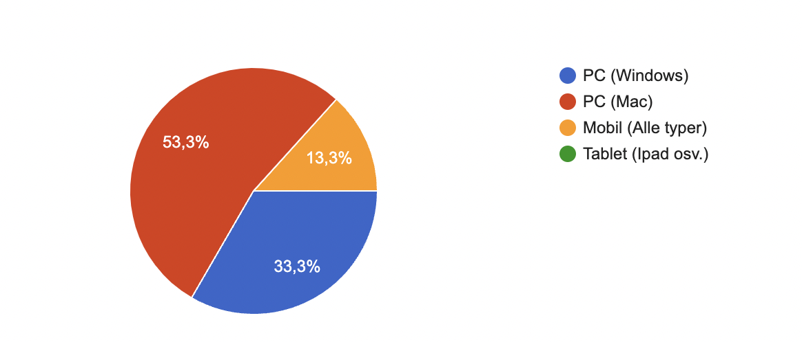
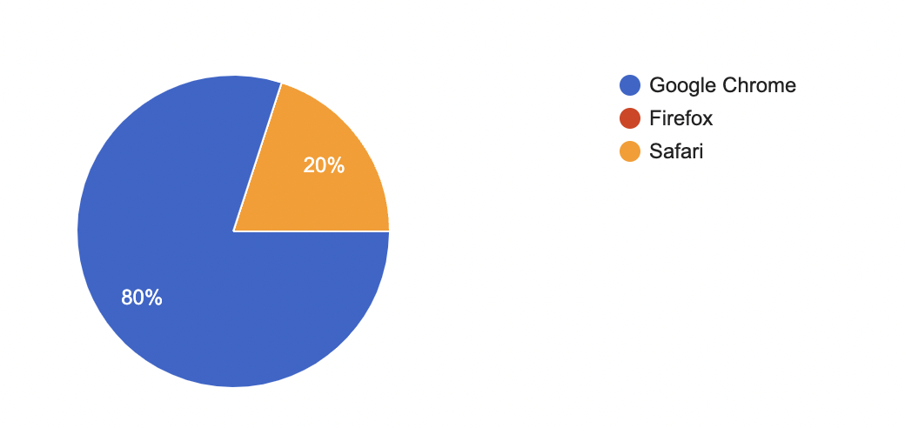

Klient: Berit Johansen
Navn på websiden: Webtek Cafe
Link til nettstedetFor å teste flere personer på en enkel og oversiktlig måte opprettet vi et Google Forms dokument som benyttet til å teste ulike testpersoner. Fra testpersonene samlet vi inn navn, kjønn, alder, yrke, hvilken enhet personen bruker(mobil, pc etc.) og hvilken nettleser som ble brukt til å teste. Testen besto av 7 oppgaver, som omhandlet å navigere rundt på nettsiden. I tillegg skulle testpersonen svare på 4 spørsmål om nettsiden. Dette var spørsmål om nettsidens design og utseende, navigasjon på nettsiden, mulige forvirringer som oppsto, samt tilbakemeldinger på ting som ting som var bra/kunne gjort annerledes. Testdokumentet som ble brukt finnes her
Målet med testingen var å nå ut til kafeens tiltenkte målgruppe. Størsteparten av testpersonene (86%) var studenter i alderen 18-24. Av denne studentgruppen var halvparten IT-studenter som, sammen med andre IT-interesserte, utgjør hovedmålgruppen til kafeen. Resterende av testpersonene, som ikke er studenter, var voksne over 40 år. Disse tilhører også en annen mindre målgruppe. Samtlige tester ble gjort under observasjon av en av nettsidens utviklere. Det ble gjort 15 tester, hvorav 60% av testpersonene var menn og 40% var kvinner.
Brukeren kunne selv velge hvilken enhet de bruker. Alternativene var pc, mac eller windows, mobil, tablet
eller annet. Da vi gikk gjennom resultatene fra testen så vi at 33,3% brukte windows pc, 53,3% bruke mac
og 13,3% brukte mobil. Dette viser til en OK variasjon av plattformer, som gjør at nettsiden blir testet
ut på mange måter. Man ser også at de forskjellige plattformene hadde forskjellige problemer når det kommer
til brukervennlighet, som vi kommer tilbake til i oppgave 6.

Videre i undersøkelsen skulle testperson velge hvilken nettleser han/hun brukte. Da nettsiden primært er
designet med hensyn til Google Chrome, oppfordret vi flertallet til å bruke denne nettleseren. Samtidig
var det noen som prøvde med andre nettlesere, i dette tilfellet safari. 80% brukte google chrome, 20%
brukte safari. Ut i fra observasjoner fra undersøkelser, ser man at google chrome støtter nettsiden best.
Safari skapte en annen styling på siden, som flertallet mente var “styggere”.

Designet på nettsiden har fått mest positive tilbakemeldinger fra testpersonene, men enkelte ting så
ikke like bra ut. Mange nevner at designet er enkelt og rent, altså er siden relativt oversiktlig.
Fonten på teksten er enkel, lettlest og har fin størrelse. At tilleggsinformasjonen på kampanjer er
skrevet i kursiv, trekkes frem som positivt. Fargene virker behagelige og passer bra med kafe-temaet.
Navigeringsmenyen på menysiden var fin.
Designet er ikke helt optimalt om brukeren bruker mobil, og det er åpenbart at siden er designet for
enheter med større skjerm. Noen knapper var litt små, og teksten i footeren var litt vanskelig å lese.
Noen kommenterer på fargebruken i menyen; grønnfargen på priser og antall burde være lik som fargen til
footeren. Andre ting som trakk ned designet var de stiplede linjene i menyen, virket forstyrrende.
Tekstboksen i om oss ser ikke så bra ut, og man hadde ikke trengt å overlappe bildet på siden. Noen av
knappene kunne også ha blitt designet bedre.
Alt i alt synes ingen av testpersonene at det var vanskelig å navigere rundt på nettsiden. Alle fant frem
til det de lette etter. Tilbakemelding om at flere av testpersonene likte navigasjonsbaren og syns den var
oversiktlig, ryddig og tok dem dit de ønsket. Lett for hvem som helst å finne frem. Tilbakemelding om at
siden er meget intuitiv der all informasjon ligger på en sti som er naturlig å finne fram til.
En testperson synes at nettsiden er veldig godt oppbygd slik at man ikke trenger å klikke seg langt inn i
siden for å finne frem. Alle testpersonene synes alt i alt at nettsiden er intuitiv, oversiktlig, ryddig og
lett å navigere rundt på.
Det som var gjennomgående var noe leting før tilbakemeldingsskjemaet ble funnet. Noen testpersoner synes det
var lite intuitivt å plassere skjemaet på om-oss. Flere testpersoner sjekket footer først. Fikk tilbakemelding
om at det hadde vært fint med en link til kontaktskjema i footer. Videre var det et par testpersoner som ønsket
seg å kunne navigere i slideshowet med piler på sidene og ikke bare med prikkene nederst på bildene.
Gjennomgående ønsket flere av testpersonene et bedre samspill mellom kampanjer og meny/bestilling. Kampanjene vi hadde,
ble ikke lagt inn på bestillingssiden og dermed fikk ikke brukerne tilbudet de hadde blitt informert om. Det var også
et ønske om at kampanjene ble vist på menysiden, slik at brukerne slapp å først sjekke kampanjesiden for deretter å
gå til meny for å bestille. Flere av testpersonene så også et behov for en mellomting mellom å ha bestilt til å få kvittering.
Videre så vi observatører et problem ang. sjekking av åpningstider. Mange gikk til om oss for informasjon om åpningstider og
kontaktinformasjon, men dette hadde vi valgt å plassere i footeren. Det var også ikke helt intuitivt at tilbakemeldingsskjemaet
skulle befinne seg på om oss siden. Noen av testpersonene opplevde det også som unødvendig med knapper på les mer på
arrangement siden, ettersom det ikke ga mye mer informasjon.
Videre sa flere at nettsiden var ryddig og hadde et fint oppsett. Mange mente den var meget intuitivt, hvor det ting lå naturlig
og bra oppdelt. Gjennomgående mente flere at siden var lettlest, med tanke på font og fontstørrelse.
For å oppsummere brukervennligheten, kan man regne seg til at omtrent 70% av testpersonene ikke hadde noen
problemer med nettsiden. De resterende 30% oppdaget/hadde noen problemer, når det kommer til brukervennlighet.
Som tidligere nevnt under innhold er det problemer med kampanjer, da man ikke får det tilbudet som er gitt. Dette skaper et problem da brukeren kan tro de har gjort en feil selv,
når det egentlig er nettsiden som inneholder feilen. Dette kan gjøre at en eventuell kunde blir irritert.
Et annet problem var at mange synes slideshowet var noe forvirrende, og mange skulle ønske de kunne trykke
på høyre eller venstre side av bilde for å bytte. Selv om dette ikke er et særlig stort problem (ikke relevant for
bestilling av mat etc.) gjør det at kunden ikke forstår nettsiden så tidlig som på kafeens framside.
Et tredje siste problem, som tidligere nevnt i oppgave 5, er hvordan nettsiden fungerte på mobil. Mange synes at
nettsiden så rotete ut, og at ikke alt fungerte som det skulle. Tilbakemeldingsskjemaet var litt knotete, og det kunne
oppfattes som vanskelig å finne “les mer” knappene på arrangementer. I tillegg kan det virke litt trangt på mobil,
da vi har valgt å style bilder og andre elementer i ganske stor størrelse. Det resulterte altså da i at bildene,
spesielt på arrangementer og kampanjer, tok opp hele skjermen.
Et godt valg
Step back and reflect on the whole project experience and what you learned from it. Are there general lessons that you learned, beyond the nuts-and-bolts of HTML, CSS, and JavaScript? We would like you to take this seriously and be thoughtful about your comments, but there is no right or wrong answer here, so don't feel that you have to flatter us or try to divine what we want to hear.